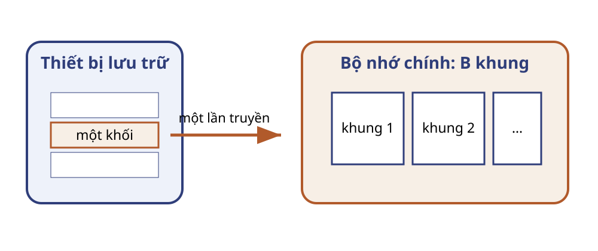
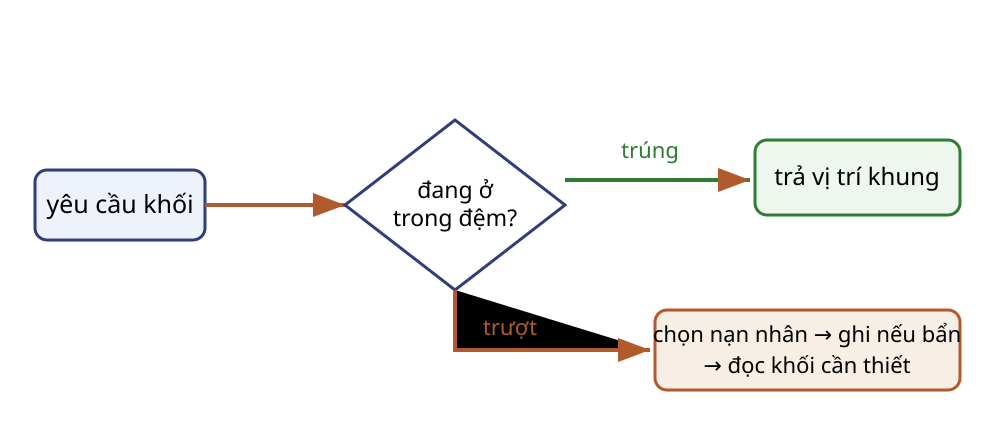
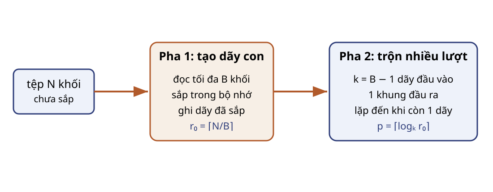
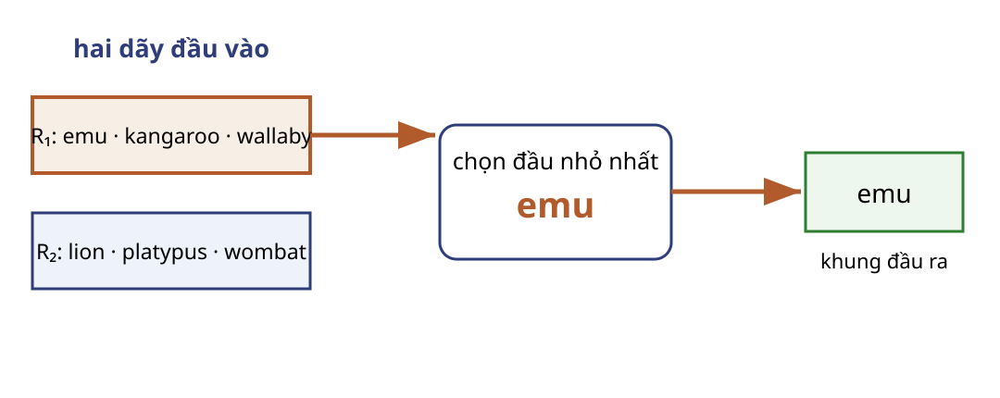
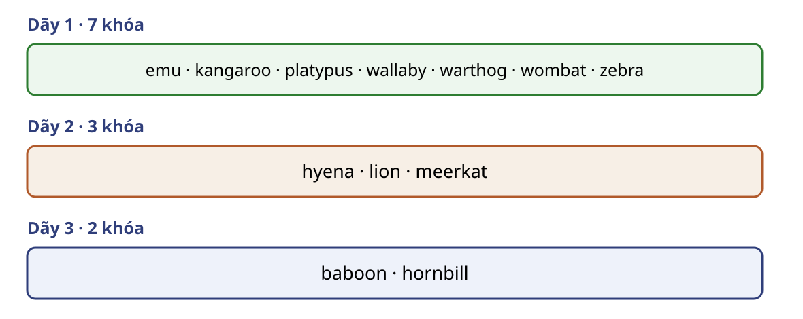

Chạy tay và giải thích tính đúng của sắp xếp trộn ngoài.
Tính số dãy, số lượt và chi phí I/O.
Tạo dãy dài hơn bằng chọn thay thế.
Tiên quyết: sắp xếp trong bộ nhớ, hàng đợi ưu tiên và logarit.
Mạch của bài
Khối và đệm
Đơn vị truyền.
Sắp xếp ngoài
Tạo dãy và trộn.
Đầu ra và chi phí
Ghi tệp hoặc truyền dòng.
Dãy dài hơn
Chọn thay thế.
I/O là nút thắt khi bảng vượt bộ nhớ
Đầu vào: bảng sự kiện lớn hơn RAM.
Yêu cầu: ORDER BY theo khóa và cấp dòng đã sắp cho toán tử sau.
Không thể nạp toàn bộ bảng rồi sắp trong bộ nhớ.
Dữ liệu đi qua một đơn vị truyền

Khối là đơn vị cấp phát và truyền
Trên thiết bị
Tệp gồm các khối chứa bản ghi.
Qua I/O
Đọc hoặc ghi chuyển cả khối.
Đếm phép so sánh chưa đủ để dự báo chi phí.
Bản ghi được đóng gói trong khối
$N=\left\lceil n/b\right\rceil$ khối
$n$: số bản ghi
$b$: bản ghi mỗi khối
$N$: kích thước I/O
Giả thiết: bản ghi cố định, không bắc qua biên khối.
$B$ khung là ngân sách đang hoạt động
$\text{bộ nhớ làm việc}=B\text{ khung}$
Tạo dãy: dùng tới $B$ khung.
Trộn: một khung đầu ra.
Vì vậy $k=B-1$ khung đầu vào.
Bộ quản lý đệm che giấu vị trí vật lý

Khối bẩn: bản sao trong đệm đã đổi nhưng chưa ghi về thiết bị.
Mô hình chi phí đếm truyền khối
Đếm
Số đọc + số ghi khối.
Tạm bỏ qua
CPU, khối cuối chưa đầy, toán tử sau.
Đọc rồi ghi toàn bộ tệp tốn $2N$ I/O khối.
Truy cập tuần tự giảm số lần định vị
Tuần tự
Một lần định vị phục vụ đoạn dài.
Rải rác
Nhiều đoạn ngắn tăng chi phí định vị.
Sắp xếp ngoài đọc và ghi mỗi dãy theo thứ tự.
Một vết I/O nhỏ
Thao tác
Đệm trước
I/O
Đệm sau
đọc A
rỗng
1 đọc
A
đọc lại A
A
0
A
sửa A, cần B
A bẩn
1 ghi + 1 đọc
B
Kiểm tra mô hình I/O
Câu hỏi: Tệp 40 khối, bộ nhớ 5 khung. Một lượt đọc–ghi tốn bao nhiêu lần truyền khối? Nếu dành một khung đầu ra, trộn tối đa bao nhiêu dãy?
$80$ lần truyền khối; $k=4$ dãy.
Sắp xếp trộn ngoài chia việc thành hai pha

Đặc tả sắp xếp ngoài
Đầu vào
Tệp $N\ge0$ khối; $B\ge1$ khung; khóa có thứ tự toàn phần.
Đầu ra
Cùng đa tập bản ghi; khóa không giảm.
Nếu $N>B$, mô hình một khung đầu ra yêu cầu $B\ge3$.
Mười hai bản ghi tạo bốn dãy ban đầu
Ví dụ nguồn: một bản ghi mỗi khối, $N=12$, $B=3$.
$R_1$: emu · kangaroo · wallaby
$R_2$: lion · platypus · wombat
$R_3$: meerkat · warthog · zebra
$R_4$: baboon · hornbill · hyena
$r_0=4$
Tạo dãy ban đầu theo mẻ $B$ khối
runs ← []
while đầu vào chưa hết:
C ← đọc tối đa B khối
sắp các bản ghi của C theo khóa
ghi C thành một dãy; thêm dãy vào runs
return runs
Số dãy ban đầu phụ thuộc $N/B$
$$r_0=\left\lceil\frac{N}{B}\right\rceil$$
Trường hợp biên: $N\le B$ thì không cần lượt trộn.
Một khung đầu ra giới hạn hệ số trộn
$$k=B-1$$
$k$ khung giữ đầu các dãy.
1 khung gom đầu ra để ghi.
Trộn hai dãy bằng khóa đầu nhỏ nhất

1. Xuất emu vào khung ra.
2. Khung $R_1$ cạn: nạp khối chứa kangaroo.
3. Khung ra đầy: ghi rồi tiếp tục.
Bất biến chứng minh phép trộn đúng
Bất biến: đầu ra là tiền tố nhỏ nhất đã sắp; đầu mỗi dãy là bản ghi nhỏ nhất trong toàn bộ phần chưa xuất của dãy đó.
Khởi tạo: đầu ra rỗng; mỗi dãy đã sắp.
Duy trì: đầu dãy nhỏ nhất là bản ghi nhỏ nhất toàn cục còn lại.
Kết thúc: mọi dãy cạn; đầu ra đúng đa tập và đã sắp.
Một nhóm trộn xử lý cả khối cạn
mergeGroup(G), |G| ≤ k:
nạp khối đầu của mỗi dãy trong G
while còn bản ghi chưa xuất:
x ← bản ghi đầu nhỏ nhất; đưa x vào đệm ra
nếu khung chứa x cạn và dãy còn khối: nạp tiếp
nếu đệm ra đầy: ghi đệm ra
ghi phần còn lại của đệm ra
Các lượt giảm số dãy đến một
runs ← createInitialRuns(input, B)
while |runs| > 1:
next ← []
chia runs thành các nhóm liên tiếp, mỗi nhóm ≤ k
for G trong các nhóm: thêm mergeGroup(G) vào next
runs ← next // r ← ceil(r/k)
return dãy duy nhất, hoặc tệp rỗng
Hết phần tử hoạt động: kết thúc dãy và kích hoạt phần đóng băng.
Mười hai khóa tạo đúng ba dãy

Giả mã duy trì hai trạng thái
nạp tối đa H khóa, đánh dấu hoạt động
while hàng đợi chưa rỗng:
nếu hết khóa hoạt động: kết thúc dãy; bỏ đóng băng
x ← khóa hoạt động nhỏ nhất; xuất x
nếu còn khóa mới y:
y ≥ x ? chèn hoạt động : chèn đóng băng
Mỗi dãy tạo ra luôn không giảm
Bất biến: mọi khóa hoạt động không nhỏ hơn khóa cuối đã xuất.
Khóa vi phạm bị đóng băng; khóa hoạt động nhỏ nhất kế tiếp nối hợp lệ.
Phạm vi dùng nhận định $2H$
Wisconsin nêu độ dài trung bình khoảng $2H$.
Trong bài này, chỉ dùng như quy tắc kinh nghiệm cho luồng đủ dài có thứ tự đến giống ngẫu nhiên.
Kiểm tra chọn thay thế
Câu hỏi: Sau khi xuất platypus, khóa mới lion thuộc dãy nào?